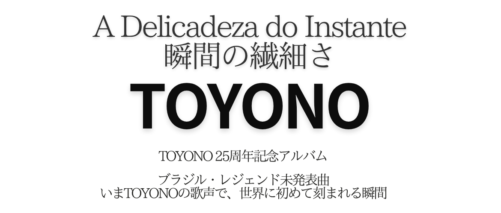

01 Recommendations
沼澤尚 Takashi Numazawa (ドラマー)
一聴してその予想を遥かに上回る傑作が産まれていたことに
それはそれは嬉しい驚きでいっぱいになった。 プロデュースがギリェルミ・ジェ、スーパーバイザーがマルコス・スザーノ、さらにホベルト・メネスカルにレイラ・ピニェイロ、そしてそして我々が大好きなシンガーTOYONO…
このキャスティングを見ただけで、確実にルーツをベースにオーセンティック&コンテンポラリー、そして間違いなくハッピーなミクスチャーブラジルサウンドを想像しつつワクワクが止まらなかったが…一聴してその予想を遥かに上回る傑作が産まれていたことにそれはそれは嬉しい驚きでいっぱいになった。「今」こんなカッコいいサウンドを発信しているこのチームワークはひとえに一人一人のその愛に溢れた人間性の集まりがその要因であることは間違いない。つまり「人間性＝音楽性」は音楽を表現する上で決して嘘をつけないからだ。
1970年代、中学生だった自分が初めてアントニオ・カルロス・ジョビン、ジョアン・ジルベルトを知ってからブラジル音楽をとどまることなく追いかけてきて、特に90年代当時世界を席巻していたMPBブームのあの素晴らしい時代のサウンドを彷彿とさせるのはもちろん、初めてブラジルサウンドに魅せられたセンセーションをも思い起こさせてくれる2026年リリースのこの傑作が世界中のより多くの人々に届きますように。 —— 沼澤尚 Takashi Numazawa (ドラマー)
マルコス・スザーノ Marcos Suzano (パーカッショニスト)
このアルバムは音楽という芸術の魅力が際立っており、TOYONOの歌声は清らかで澄み渡り実に心地よい場所に響いている。感情豊かな表現力で歌い上げられており、その多くがポルトガル語で歌われているが、これは日本人ヴォーカリストにとって間違いなく大きな挑戦であったはずだ。しかし、彼女は見事に歌い切っている！！！！ ギリェルミ・ジェがプロデュースしたTOYONOのアルバム『A Delicadeza do Instante』は、本当に素晴らしい作品だ。丁寧に作り込まれたサウンドによってアルバム全曲通しての調和が見事で、ステレオタイプの”日本のシンガーが歌うブラジル音楽"という枠組みを完全に超越した、洗練された現代MPBの感覚がしっかり息づいた、力強いブラジリダーヂ溢れる作品に仕上がっている。歌詞も非常に素晴らしく、参加しているミュージシャンたちの演奏も極上だ。
このアルバムは音楽という芸術の魅力が際立っており、TOYONOの歌声は清らかで澄み渡り、実に心地よい場所に響いている。感情豊かな表現力で歌い上げられており、その多くがポルトガル語で歌われているが、これは日本人ヴォーカリストにとって間違いなく大きな挑戦であったはずだ。しかし、彼女は見事に歌い切っている！！！！
選曲も秀逸で、オリジナル楽曲に加え、名曲「O Trem Azul」の非常に新しく新鮮なカバーも収録されており、実に素晴らしい仕上がりだ。僕もパーカッションでこのプロジェクトに参加し、コラボレーションできたことを本当に嬉しく思っている！！！ 様々なシチュエーションで心地よく聴けるアルバムであり、誰もがこの作品を楽しんでくれると信じているし、心からそう願っている！！！
Parabéns, TOYONO ! —— マルコス・スザーノ Marcos Suzano (パーカッショニスト)
02 Guilherme Gê ギレェルミ・ジェより1
TOYONOと「A Delicadeza do Instante 瞬間の繊細さ」
TOYONOがポルトガル語で歌うのを聴くとき、そこには格別の魅力が宿っています。
『A Delicadeza do Instante』において、この日本人シンガーは単に外国のレパートリーをなぞるのではなく、異国の言語の中に自分ならではの歌声を見出した表現者として、ブラジルの楽曲へと向かい合っています。ここではポルトガル語は単なる歌詞を超え、彼女の芸術的アイデンティティそのものとなっています。
これこそが、本作を象徴する最も大きな特徴と言えるでしょう。TOYONOは言葉の響きや母音、抑揚、そしてそれぞれのフレーズのメロディラインへ細やかに気を配りながら歌い上げていきます。ひとつひとつの言葉を丁寧に発音しながらも、日本人であることを無理に隠す様子はありません。むしろ逆で、日本人であることが隠されずに存在しているからこそ、彼女の歌唱は唯一無二の輝きを放つのです。
彼女の歌声は繊細でありながら、凛とした芯の強さを感じさせます。過剰な演出でドラマティックに仕立てるのではなく、声の強弱や音色、言葉の端々に込める微細なニュアンスの積み重ねによって、密やかで濃密な空気感を生み出していく。表現を巧みにコントロールすることで、メロディ自体がのびのびと息づく豊かな余白が生み出されています。
このアプローチはブラジル音楽と向き合う上で大きな意味を持ちます。ブラジルの楽曲は、ポルトガル語の言葉とリズムとメロディが密接に絡み合って成立することが多いためです。TOYONOは言葉を正しく発音するだけでなく、その響きやニュアンスが音楽全体をどう活かすかを深く理解しているのがわかります。歌の中に言葉を溶け込ませ、命を吹き込むアクセントや間(ま)を見出しているのです。
アルバムを通じて、彼女は自身の個性を保ちながら多彩な表情を見せてくれます。語りかけるような親密な瞬間もあれば、歌声が存在感を増す場面もありますが、楽曲に対する姿勢にはブレない一貫した美学が存在します。
その結実として生まれたのが、いわば「第三の領域」です。それは単なる日本人が歌うブラジル音楽でもなければ、彼女をブラジル人歌手に仕立て上げる試みでもありません。「TOYONOというアーティストのありのまま」から紡ぎ出された、真のブラジル音楽なのです。伝統の中で育まれてきた楽曲たちが、彼女の歌声や発音、感性を通すことで、まったく新しい光を帯びて立ち現れます。
その意味で『A Delicadeza do Instante』は「出会い」のアルバムです。ブラジルと日本、異なる言語と文化、そして作曲家と歌い手の出会い。しかし何より、ポルトガル語の中に新たな表現の可能性を見出した一人のシンガーの姿を収めた、かけがえのない記録なのです。
書籍やインタビュー等で彼女が語るように、時間をかけて少しずつ少しずつ、ポルトガル語が彼女の声の中に自らの居場所を見出していったんだと思う。「TOYONOの声」と「ポルトガル語」二つが溶け合ったその奇跡的な出会いがあったからこそ、このアルバムの唯一無二の世界観が生まれているのだと思います。
03 Guilherme Gê ギレェルミ・ジェより2
私と「A Delicadeza do Instante 瞬間の繊細さ」
『A Delicadeza do Instante』は、ブラジル音楽とTOYONOの持つ日本的な芸術的感性が出会うことで生まれたアルバムです。
サウンドプロデューサー兼アーティスティック・ディレクターとしての私の役割は、歌い手としてのTOYONOの個性を引き立てるサウンド・アイデンティティを構築し、彼女の歌声とブラジル音楽のさまざまな要素との間に対話を成立させることでした。
全9曲で構成されたこのアルバムには、レイラ・ピニェイロ、ホベルト・メネスカル、マルコス・スザーノ、カルロス・マルタ、クラウヂオ・インファンチ、マリオ・ファブリ、ハファエル・ベロといったブラジルの第一線で活躍するミュージシャンやアーティストが参加しています。
また収録楽曲についても私自身の作品世界と深くリンクしています。全9曲中6曲が私の作曲によるもので、そのうちのいくつかはパウロ・セルジオ・ヴァーリやホベルト・メネスカルといった作曲家との共作です。また、ガブリエル・ジャックとの共作によるもう一つの楽曲は、TOYONOが歌うために特別に日本語のバージョンが作られました。
サウンドプロダクションにおいては、TOYONOの解釈・表現力を常に中心に置き、呼吸や流れを大切にしたオーガニックなアレンジ・音色・演奏者のパフォーマンスをひとつひとつ丁寧に織り上げていくことで、各楽曲がもつ真髄を追求していきました。その結果、楽曲という普遍的な言語を通じて二つの文化を引き寄せるようなアルバムが完成しました。
アルバムのサウンドプロデュースとアーティスティック・ディレクションに加えて、『Coisas da Paixão ブラジルの情熱』のMVのアーティスティック・ディレクションも私が行い、このプロジェクトの持つ世界観を映像表現へと広げました。
『A Delicadeza do Instante』は私にとって、作曲、歌唱表現、 そしてサウンドプロデュースを通じて出来上がった、ブラジルと日本の芸術的出会いを意味する作品です。ブラジルで生まれた楽曲が、日本人であるTOYONOの歌声と繊細な感性により新たな魅力が引き出される、素晴らしい体験となりました。
04 Production Notes
現代リオの旗手 Guilherme Gê ギレェルミ・ジェ
ボサノヴァの偉人 Roberto Menescal ホベルト・メネスカル
マルコス・ヴァーリの兄、作詞家 Paulo Sérgio Valle パウロ・セルジオ・ヴァーリ
Netflix ドキュメンタリー 『ラテン・ブラッド』 (2025)で全世界的に再評価されるネイ・マトグロッソとのコラボレーションでも注目を集める、リオ発ロックバンドHectoのヴォーカリスト・ギタリストのギリェルミ・ジェをプロデューサーに迎えて制作されたTOYONO25周年記念アルバム。
本作の核となるのは
「現代リオの旗手ギリェルミ・ジェ」
「ボサノヴァの偉人ホベルト・メネスカル」
そして「マルコス・ヴァーリの兄として知られる作詞家パウロ・セルジオ・ヴァーリ」
という、世代とスタイルを越えてブラジル音楽を象徴する3人によって共作されながら、これまで発表されることのなかった楽曲群である。
その歌い手として選ばれたのは日本のTOYONO。
3人の創作が、TOYONOの歌声によって、いま初めて作品として結実する。
Leila Pinheiro レイラ・ピニェイロと奇跡のデュエット
そして、浅田クラウヂアさんに捧ぐ「幾星霜」
さらに日本を代表するポップソング 「6. 卒業写真 (荒井由実)」「7. 夢の続き (竹内まりや)」をブラジルミュージシャン達による演奏でカヴァー。ボサノヴァレジェンドのホベルト・メネスカルが、自作楽曲の提供だけに終わらず 「6. 卒業写真」にジャズ・ギターで録音にも参加している。
パーカッションには本作のスーパーバイザーでもあるMarcos Suzanoマルコス・スザーノが全面参加し、リズムの奥行きと躍動感を加える。加えて、ブラジル音楽界を代表するレジェンド・シンガーLeila Pinheiroレイラ・ピニェイロが 「3. Coisas da Paixão ブラジルの情熱」にてTOYONOとのデュエットヴォーカルで参加。
ボサノヴァ以降の豊かな系譜を体現し続けてきたその歌声は、渡辺貞夫の作品や来日公演でも親しまれており、本作における重要なハイライトのひとつとなっている。
TOYONOらしさのひとつであるポルトガル語歌詞と日本語歌詞での同曲収録は今作でも行われている。TOYONOのアルバム 『pelicano heaven』のプロデューサーでシンガーソングライターの片岡大志が「4. Por Toda A Sua Vida その人生のすべてに」に「幾星霜」 というタイトルで日本語歌詞を書き下ろしている。この日本語歌詞は日本のミュージックシーン、とりわけ”日本のブラジル音楽の聖地”として38年に渡り愛され続けた青山プラッサオンゼ (2018年閉店)の、そのチャーミングな人柄が同じく皆から愛され続けた、アンドTOYONOと片岡大志にとってもかけがえのない大切な友人であった二代目オーナー浅田クラウヂアさんに捧げられたものである。(浅田クラウヂアさんは2022年に旅立たれた。)
アルバムタイトル「瞬間の繊細さ」に込められた想い
本作のタイトル 「A Delicadeza do Instante 瞬間の繊細さ」はギリェルミ・ジェからの贈り物である。マルコス・スザーノの大推薦により実現したTOYONOとジェとの共同制作は、約1年という歳月をかけ、時に二人きりでの密なプロダクションとして、東京とリオでキャッチボール形式で進められた。実際には会った事のない者同士でありながら、制作の過程で響き合う音楽的相性の良さを確信した彼が、その幸福な調和を表現したのがこの言葉である。
現代リオ音楽シーンを牽引するジェは、父が画家、伯父にブラジル現代美術の巨匠Glauco Rodrigues グラウコ・ロドリゲス (サウヴァドール空港の巨大なモザイク画が有名。彼の作品のひとつである映画 『イパネマの娘』のポスターは日本でも多く目にする。ほか、ジョアン・ボスコ名盤3作品など。)という、幼少期から豊かな芸術に囲まれて育つ。
彼がこのフレーズをより強く確信したのは、伊藤陽一郎のアートワークに深く心を動かされた瞬間でもあった。伊藤陽一郎は、DJとして「夢の続き」をダンスフロア仕様にリミックスし、これがこのアルバムの先行シングルとなるなど、音とヴィジュアルの両面からこの作品世界を彩る。(ボーナストラック 「11. 夢の続き AKAKAGE's Back to 90's remix」 として収録)
アルバムタイトル 「瞬間の繊細さ」に寄り添うように、ポルトガルの詩人フェルナンド・ペソアの一節が添えられている。これはギリェルミ・ジェの音楽哲学のうちのひとつであり、今回のプロジェクトにより強く感じたゆえとのことだ。
"O valor das coisas não está no tempo em que elas duram, mas na intensidade com que acontecem. Por isso, existem momentos inesquecíveis, coisas inexplicáveis e pessoas incomparáveis."
(Fernando Pessoa)
「物事の価値は、どれほど長く続いたかではなく、どれほど心が躍動したかにある。だからこそ、忘れられない瞬間、理屈ではない出来事、かけがえのない人が存在する。」 —— フェルナンド・ペソア
05 Tracklist
- 01 Se Tiver Que Ser 予感 (Guilherme Gê / Paulo Sérgio Valle)
- 02 Carta a um Irmão レター・トゥ・ア・ブラザー (Paulo Sérgio Valle / Guilherme Gê / Roberto Menescal)
- 03 Coisas da Paixão feat. Leila Pinheiro ブラジルの情熱 feat. レイラ・ピニェイロ (Roberto Menescal / Guilherme Gê / Paulo Sérgio Valle)
- 04 Por Toda A Sua Vida その人生のすべてに (Guilherme Gê / Gabriel)
- 05 Paraglider パラグライダー (Guilherme Gê / Roberto Menescal / Paulo Sérgio Valle)
-
06
卒業写真 feat. Roberto Menescal (jazz guitar) ※カヴァー (荒井由実)作詞者：荒井 由実 ／ 作曲者：荒井 由実
©1974 by ALFA MUSIC, INC. -
07
夢の続き ※カヴァー (竹内まりや)作詞：竹内 まりや ／ 作曲：竹内 まりや
(C)1987 by FUJIPACIFIC MUSIC INC. & SMILE PUBLISHERS INC. - 08 Foi Demais 最愛 (Guilherme Gê / Roberto Menescal / Paulo Sérgio Valle)
- 09 O Trem Azul 青い列車 ※カヴァー (Lô Borges / Ronaldo Bastos)
- 10 幾星霜 “Por Toda A Sua Vida" versão em japonês Dedicado a Cláudia (Guilherme Gê / Gabriel / 片岡大志)
- 11 (Bonus Track) 夢の続き AKAKAGE's Back to 90's remix (竹内まりや)
06 Credits
| Total Produced by | TOYONO |
|---|---|
| All Sound Produced & Arranged by | Guilherme Gê (Rio de Janeiro) |
| Musicians |
Guilherme Gê: acoustic guitar, electric guitar, piano, organ, keyboards, electric bass, synth bass, electronic drum, programming and samples. (Recorded instruments in Udu Music Rio @guilhermege.hecto) Marcos Suzano: pandeiro, shaker, brush drums, wave drum and electronic percussion Roberto Menescal: jazz guitar (6) Leila Pinheiro: vocal (3) Carlos Malta: flute (2) Rafael Dias Belo: violin & viola (3, 10) Mario Fabre: drums (9) Claudio Infante: drums (6, 7) Marcelo Rezende: chorus (7) |
| Vocal Recording |
Leila Pinheiro vocal recorded by Renato Alscher TOYONO vocals recorded by Ryo Sakai @ NK SOUND TOKYO |
| Mixed & Mastered by | Neeraj Khajanchi @ NK SOUND TOKYO |
| Lyrics Translation | translated from Portuguese into Japanese by TOYONO |
| Staff & Production |
Promotion Director: Tatsuya Maezawa Executive Producer: Akitoshi Takeda Supervisor: Marcos Suzano Art Direction, Designer & All Art Works: Yoichiro Ito Special Thanks to: Déa Moura (photos) in Studio Corredor 5 |
07 商品情報
| Release Date | 2026年11月18日 |
|---|---|
| Title | A Delicadeza do Instante 瞬間の繊細さ (アデリカデーザドインスタンチ) |
| Artist | TOYONO |
| Catalog No. | MDRN-2026 |
| Price | 定価 ¥3,000（税抜価格 ¥2,727） |
| JAN Code | 4589518615082 |
| Format | CD / J-POP、ブラジル (11曲収録 / ポルトガル語歌詞・TOYONOによる対訳付) |
| Label | Manufactured by modelo MODERNO / Distributed by File Records inc. |
【アーティスト・プロフィール】
TOYONO (ブラジル音楽シンガーソングライター)
大阪出身。OL時代に耳にしたジョイス・モレーノに憧れてブラジル音楽への想いが高まり、歌い手の道を志して単身でリオデジャネイロへ渡る。帰国後、東京を拠点に本格的な音楽活動を開始。著名DJやブラジルを代表するアーティストとの作品を多数発表し、2016年ビクターエンタテインメントよりメジャーデビュー。代表曲「トレス・マリアス」はJAL国際線機内放送に採用され話題に。
FM番組「TOYONO moda brasil」パーソナリティを務め、語学力を生かし現地アーティストへ通訳なしでポルトガル語インタビューを行うほか、ナレーションや執筆など多方面で活躍。2026年にソロデビュー25周年を迎え、本作を携え開催した5月のTOKYO FM ホール公演には、長年の共演者であり世界的パーカッショニストのマルコス・スザーノが来日参加し大成功を収めた。
09 Music Video & Live Video
M3. Coisas da Paixão feat. Leila Pinheiro ブラジルの情熱
リオデジャネイロにて制作。TOYONO、レイラ・ピニェイロ、ギリェルミ・ジェ出演
Direção: Guilherme Gê / Edição: João Oliveira / Assistente de Edição: Márcio Belao
M2. Carta a um Irmão レター・トゥ・ア・ブラザー
ニューヨークにて制作。新進気鋭の映像作家・パルクール選手であり、TOYONOの従姉妹の娘でもあるSeneca Schwartz (セネカ・シュワルツ)が出演・制作。
M4. & M10. Por Toda A Sua Vida / 幾星霜（ライブ映像）
2026.05.23 TOYONO 25周年記念公演 feat.マルコス・スザーノ@TOKYO FM Hall ライブ映像
10 português
RELEASE / SOBRE O ÁLBUM
Celebrando os 25 anos de carreira solo de TOYONO, cantora e compositora japonesa reconhecida como uma das principais intérpretes da MPB moderna no Japão. O álbum "A Delicadeza do Instante" traz uma fusão sublime entre a sofisticação da música produzida no Rio de Janeiro e a sensibilidade única da artista em interpretações em português e japonês.
Produzido por Guilherme Gê e sob a supervisão rítmica de Marcos Suzano, o projeto conta com participações históricas de lendas da música brasileira como Roberto Menescal e Leila Pinheiro, além de canções inéditas escritas por Paulo Sérgio Valle em parceria com Guilherme Gê e Menescal.
TOYONO e "A Delicadeza do Instante" — por Guilherme Gê (Part 1)
Ouvir TOYONO cantar em português tem um fascínio muito especial. Em "A Delicadeza do Instante", a cantora japonesa não apenas interpreta um repertório estrangeiro, mas se posiciona como uma artista que encontrou na língua portuguesa uma extensão de sua própria voz e de sua identidade artística.
Esse é, talvez, o aspecto mais marcante do trabalho. TOYONO canta com uma atenção minuciosa à sonoridade das palavras, às vogais, à acentuação e ao desenho melódico de cada frase. Há um cuidado evidente na pronúncia, mas em momento algum se percebe o desejo de esconder sua origem. Pelo contrário: é justamente a presença de sua brasilidade aprendida e vivida a partir do olhar e da sensibilidade japonesa que torna a interpretação tão singular.
Sua voz tem uma leveza que não significa falta de força, mas sim uma delicadeza consciente. Ela não busca o drama explícito, mas constrói a emoção através de nuances, de pequenas variações de dinâmica e timbres que criam uma atmosfera intimista. Essa contenção expressiva permite que as melodias respirem com elegância.
Na música brasileira, em que texto, ritmo e melodia se entrelaçam de forma tão íntima, esse tipo de abordagem faz toda a diferença. TOYONO demonstra compreender que cantar em português não é apenas pronunciar corretamente as palavras, mas perceber como o som da língua afeta o balanço da música. Ela encontra o balanço certo para a colocação das palavras na melodia.
Ao longo do álbum, a cantora passeia por diferentes atmosferas mantendo sempre uma coerência estética refinada. Há momentos mais sussurrados e outros em que a voz ganha maior projeção, mas a atitude em relação à música permanece a mesma: de profundo respeito e entrega.
O resultado é o que poderíamos chamar de um "terceiro território": não é a música brasileira feita por uma japonesa, nem a tentativa de transformá-la em uma cantora brasileira, mas a música brasileira existindo através de quem TOYONO é. As canções, pertencentes a uma tradição rica e consolidada, ganham contornos novos quando atravessadas pela sua voz e pela sua sensibilidade cultural.
"A Delicadeza do Instante" é, assim, um álbum de encontros. Do Brasil com o Japão, de compositores históricos com uma cantora dedicada, de culturas distantes que se aproximam pela arte. Mas é, acima de tudo, o registro de uma intérprete que habita a língua portuguesa com verdade, delicadeza e beleza singular.
Eu e "A Delicadeza do Instante" — por Guilherme Gê (Part 2)
"A Delicadeza do Instante" é um álbum que nasce do encontro entre a música brasileira e a sensibilidade artística de TOYONO. Como produtor musical e diretor artístico do projeto, meu papel foi construir uma identidade sonora que valorizasse a singularidade de TOYONO como intérprete, criando um diálogo entre sua voz e os diferentes elementos da música brasileira.
O álbum reúne nove faixas gravadas com a participação de grandes nomes da música brasileira, como Leila Pinheiro, Roberto Menescal, Marcos Suzano, Carlos Malta, Claudio Infante, Mario Fabre e ハファエル・ベロ（Rafael Belo）。
O repertório também está fortemente ligado ao meu universo de composição: das nove faixas, seis são de minha autoria, algumas em parceria com compositores como Paulo Sérgio Valle e Roberto Menescal. Há também uma composição minha em parceria com Gabriel, que ganhou uma versão especial em japonês escrita para TOYONO.
Na produção musical, busquei ressaltar a intenção e a sensibilidade de TOYONO, construindo arranjos orgânicos que valorizam a respiração, a dinâmica e a sonoridade dos instrumentos gravados no Rio de Janeiro. O resultado é um álbum que une duas culturas através da linguagem universal da música.
Além da produção musical e direção artística do álbum, também assino a direção artística do videoclipe da faixa "Coisas da Paixão", estendendo a identidade visual e conceitual do projeto para a linguagem audiovisual.
"A Delicadeza do Instante" representa, para mim, uma experiência profunda de criação, produção e encontro artístico entre o Brasil e o Japão.
Comentário de Marcos Suzano
O álbum "A Delicadeza do Instante" da TOYONO, produzido pelo Guilherme Gê, está realmente incrível. Um trabalho super caprichado, com uma sonoridade linda e com uma visão muito moderna da MPB. As músicas são ótimas, os arranjos de muito bom gosto e a performance de todos os músicos envolvidos é de primeiríssima qualidade.
A voz da TOYONO está linda, afinadíssima e muito expressiva, cantando a maioria das músicas em português — o que é um enorme desafio para uma cantora japonesa, mas ela deu um show！！！！
O repertório é ótimo, misturando músicas inéditas de grandes compositores com uma versão super nova e renovada de "O Trem Azul". Fico muito feliz em ter participado tocando percussão e colaborado nesse projeto！！！ É un disco ótimo de ouvir em qualquer momento, e tenho certeza de que todo mundo vai amar！！！ Parabéns, TOYONO!